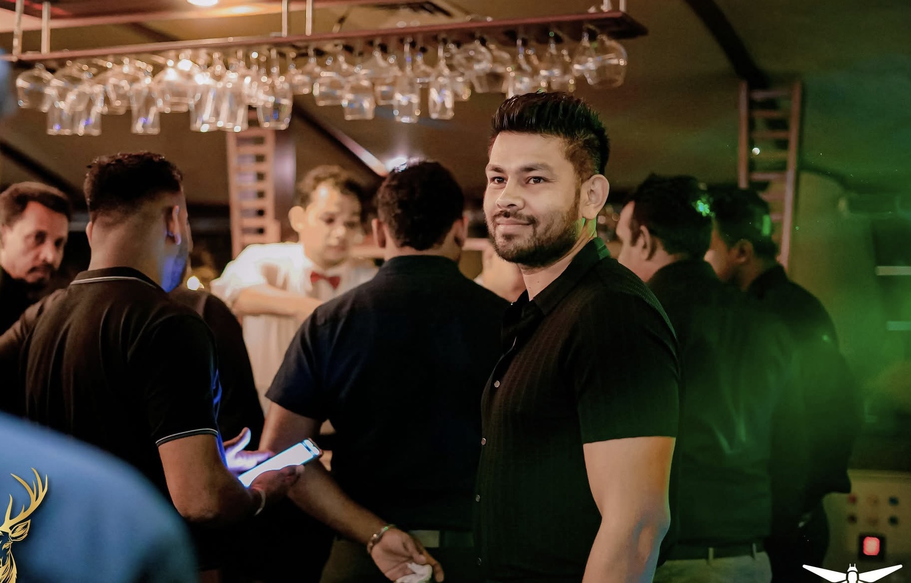

Iron Arms Sport Club

Welcome to Iron Arms Sport Club Thalangama, a Sri Lankan sports club focused on Tug of War, fitness, strength and competitive sports.
Building strength. Building teamwork. Building champions.
About Iron Arms Sport Club Thalangama
Iron Arms Sport Club Thalangama is a sports club based in Malabe, Sri Lanka.
The club was founded on 22 September 2020 with a focus on developing strength, fitness, teamwork and competitive sporting ability.
The club is particularly associated with Tug of War (කඹ ඇදීම) and aims to support athletes and teams through training, discipline, teamwork and sporting experience.
Founder & Leader
Ramesh Ranaweera
Ramesh Ranaweera is identified as the founder and leader of Iron Arms Sport Club Thalangama.
The club was developed from his interest, experience and determination in sports, strength training and physical fitness.
His sporting background includes experience in strength, fitness and competitive sports.
Ramesh Ranaweera – Sporting Achievements
- Full Contact Karate National Champion – 2010
- Powerlifting Champion – 2011–2019
- Colombo District Bodybuilding / Physical Fitness Champion – 2013
- District Swimming Champion – Backstroke, Freestyle and Butterfly
These achievements are included as part of the sporting background provided for the Iron Arms Sport Club website.
Iron Arms Sport Club – History
2020
Iron Arms Sport Club was founded on 22 September 2020.
Development
The club continued developing its sporting activities with a focus on Tug of War, strength, fitness and teamwork.
Today
Iron Arms Sport Club Thalangama continues to represent its commitment to Tug of War and competitive sports in Sri Lanka.
Contact Iron Arms Sport Club
Location: Malabe, Sri Lanka
Phone: 077 078 3015
Sport: Tug of War
Facebook: Iron Arms Sport Club Thalangama
Information
This website provides information about Iron Arms Sport Club Thalangama, its sporting activities, Tug of War involvement, history and founder.
Information displayed on this website is intended to help visitors and search engines understand the organization.